在jsp、asp、php发展的初期，很多项目都是没有前后台之分，大量的业务逻辑，数据库查询代码写在<%%>或<??>中，随着各种框架的发展，项目都会分成前后台，jsp、asp、php中只写和界面相关的代码，后台写业务逻辑、数据库查询。
同理，我们不提倡在jet模板中插入各种业务逻辑，这会使得页面变得冗余，不美观。
如下例，输出哈利波特书名和列表。
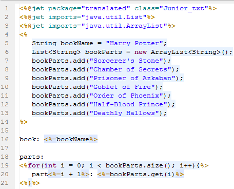
运行结果如下：
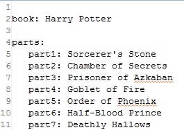
这是action，也就是一个java类。把业务逻辑全放这吧！
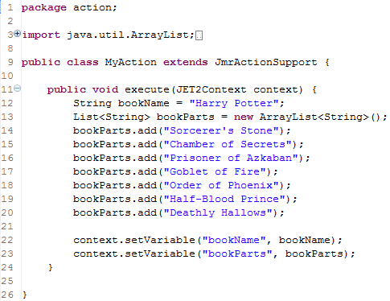
使用action后，同样的结果，是不是简洁了许多呢？
从context中得到想要的变量输出。
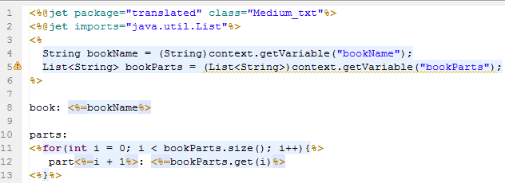
当然，还可以进一步，使用action + 结合标签，这样才完美！
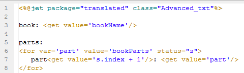
在模板头部指定下提示的Action
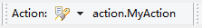
按提示键（如Alt+/），可以提示出所有变量。
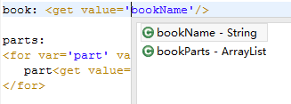
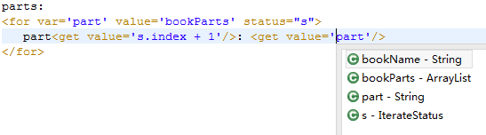
标签中的变量使用Ognl扩展，可以自由的使用到变量的属性和方法（此处类型为String）。
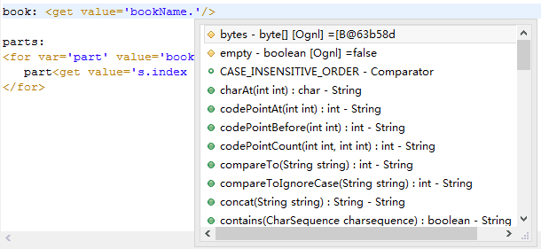
将鼠标选中，或者放到对应的位置可以显示值。
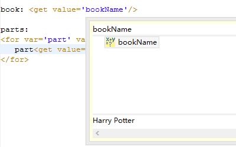
总结：Action和标签更配哦，它们结合的优点：
鼠标右键，在New中选择Jmr Action，或者在其它（Other）找到JMR目录下也有。
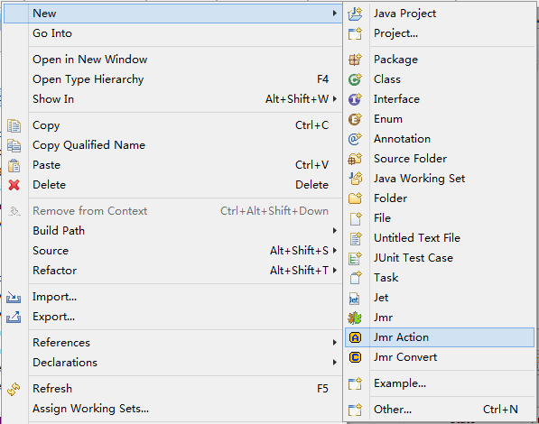
输入名称MyAction，点击完成（Finish）。
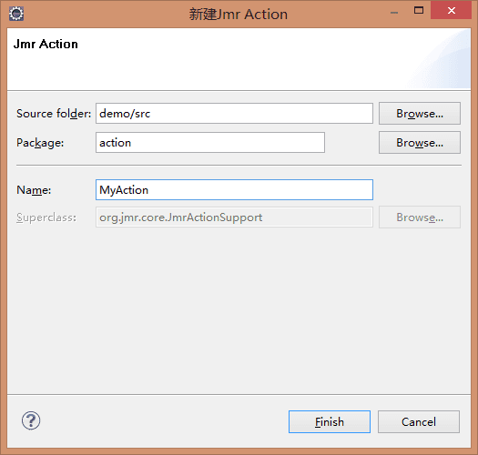
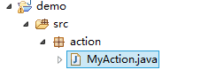
如果当前项目没有载入Jmr的库
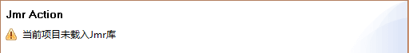
点击完成（Finish）后，点击OK导入Jmr库即可。
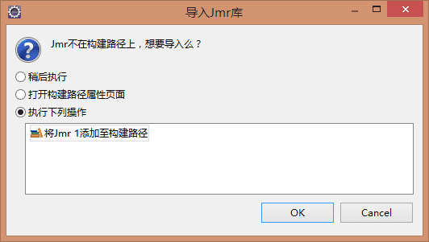
在项目中就会加入Jmr库，这个库和Junit库一样，只存在于项目开发环境里，不会影响项目实际的依赖结构。
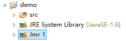
在任务的Action栏目中点击浏览
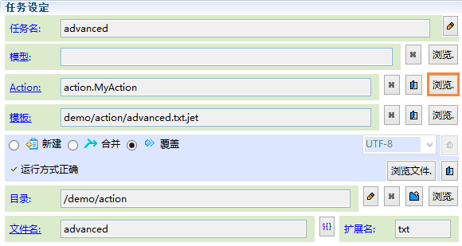
在弹出的浏览框中会匹配所有的Jmr Action，选择MyAction。
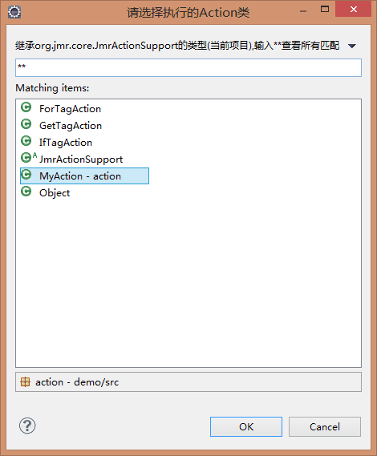
这样，任务中就设置好了action。
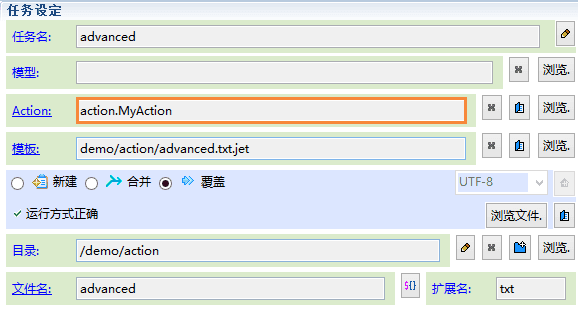
action的结构很简单，在execute方法中提供上下文容器context。只要往context中设置需要传递的变量即可。
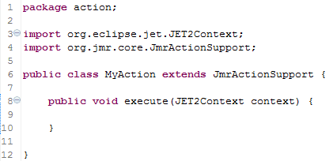
可以在context中设置变量和全局变量。变量可以是各种基本类型，Object对象等。
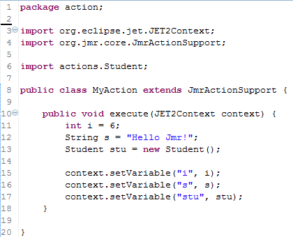
关于context设置变量，请阅读：
在模版中，如果想得到Action的提示，可以选择想要的Action；
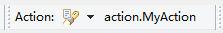
在标签中可以得到这些变量的提示。
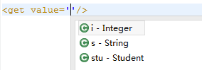
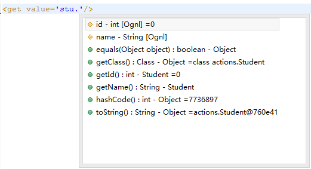
更多关于标签调用，请阅读：